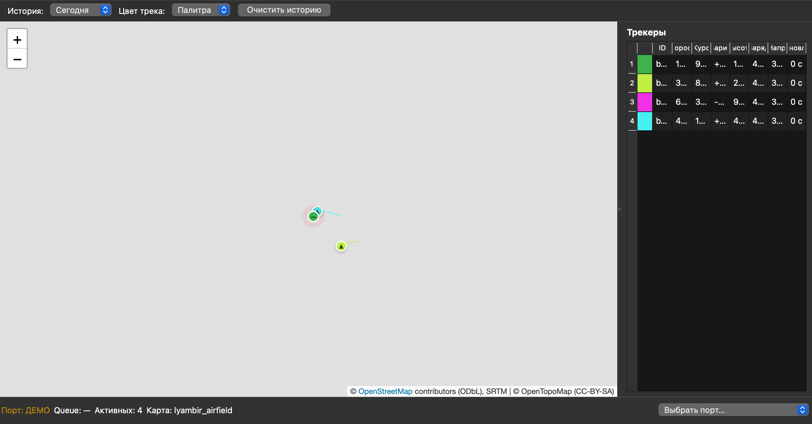
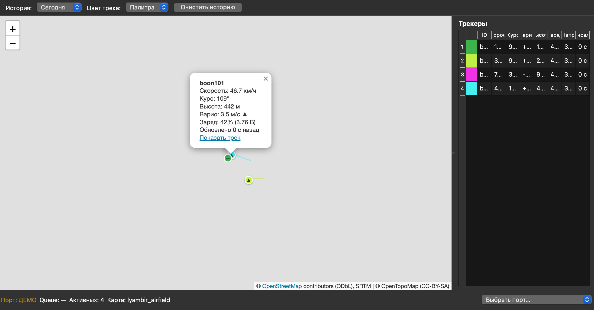
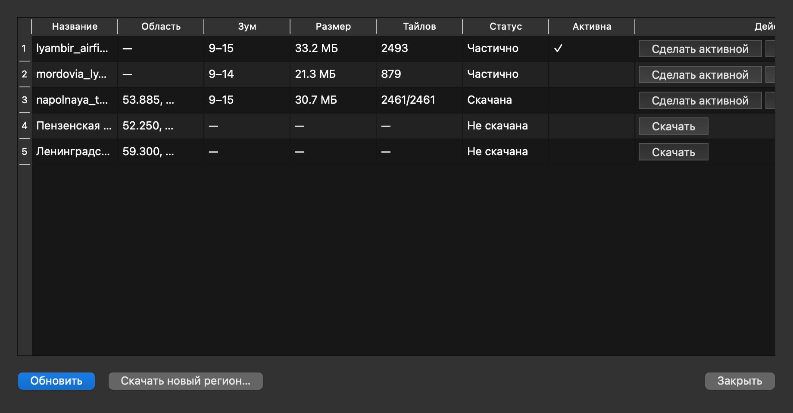

Полностью оффлайн · Windows и macOS
MeshTrack Desktop показывает позиции летателей в реальном времени: курс, скорость, высоту и тренд набора/снижения — прямо на ноутбуке в поле, без интернета и облаков.

Никакого интернета и серверов — всё передаётся по радиоканалу и показывается локально.
Небольшое устройство на LoRa-радиомодуле: GPS-координаты, высота, заряд батареи, кнопка SOS. Отправляет пакеты по радиоканалу.
LoRa-приёмник подключается к ноутбуку по USB (UART, 115200 бод) и передаёт принятые пакеты в приложение.
MeshTrack Desktop парсит телеметрию, считает скорость, курс и варио, рисует позиции на топографической карте и сохраняет историю.

Каждый летатель — цветной маркер с ▲ набором / ▼ снижением, стрелкой курса (длина = скорость) и индикатором устаревания данных.
Сводка по всем устройствам: скорость, высота, тренд, заряд, время последнего пакета. Клик — центрировать карту, двойной клик — показать/скрыть трек.
При тревоге маркер пульсирует красным — пропустить невозможно.
Топографические карты (OpenTopoMap) качаются один раз в виде файла области и работают без интернета сколько угодно.
Все позиции хранятся локально в SQLite. Фильтр «Сегодня/Вчера/Период», экспорт треков в GPX и CSV.
Не подключили приёмник? Запустите с демо-данными и посмотрите, как всё работает, прямо сейчас.
Приёмник печатает одну JSON-строку на пакет — приложение понимает именно такой формат:
{"device_id":123,"lat":54.12345,"lon":45.67890,"alt":1230,
"datetime":"2026-09-16T12:01:00","sos":0,"battery_pct":87,
"battery_mv":4020,"rssi":"-27.00dBm","snr":"5.25dB",
"ttl":3,"crc":241}Установка — это один файл: скачать и запустить. Никаких Python, IDE и настроек.
Сборки не подписаны: на Windows — «Подробнее → Выполнить», на macOS — правой кнопкой «Открыть».

Вопросы, предложения, заказ оборудования — пишите автору:
Евгений Шлягин · shlyagin@gmail.com · репозиторий на GitHub